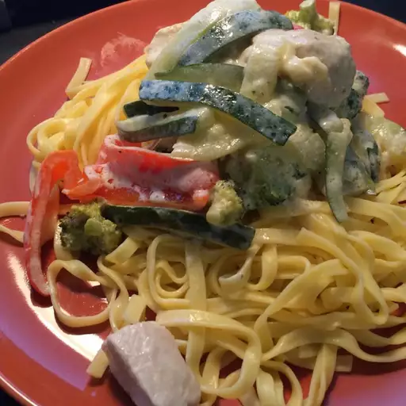

Chicken Alfredo

Description
Fettuccine Alfredo is a pasta dish consisting of fettuccine tossed with butter
and Parmesan cheese, which melt and emulsify to form a rich cheese sauce coating
the pasta. Originating in Rome in the early 20th century, the recipe is now popular
in the United States and other countries. Outside of Italy, cream is sometimes
used to thicken the sauce, and ingredients such as chicken, shrimp, salmon or
broccoli may also be added when it is served as a main course.
Ingredients
- Fettuccine pasta
- Cream cheese
- Butter
- Milk
- Garlic powder
- Chicken breast
- Broccoli
- Zucchini
- Red bell pepper
Steps
-
Bring a large pot of lightly salted water to a boil. Add pasta,
and cook for 8 to 10 minutes, or until al dente; drain.
-
While pasta is cooking, melt cream cheese and butter in a skillet
over low heat. Stir until smooth. Stir in milk, and season with garlic
powder, salt, and pepper. Simmer for 3 minutes, or until thickened,
stirring constantly.
-
Mix in chicken, broccoli, zucchini, and red pepper. Cook 3 minutes
over medium heat, then reduce heat, and simmer 5 minutes, or until
vegetables are tender. Serve over fettuccine.